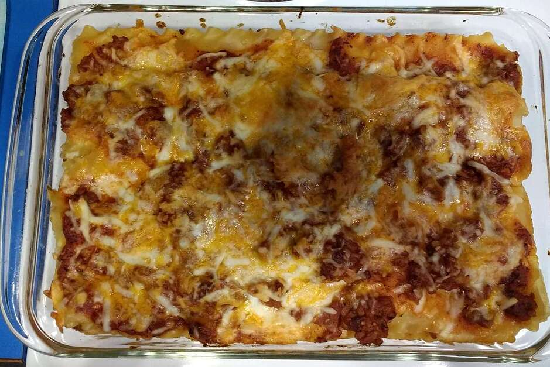

Lasagna recipe

Description
A good Lasagna is not about the recipe , it abo.. kidding , Recipe make all the different guys
Down here you can find a list of Ingredient to make one for yourself
Recipe list
- Lasagna noodle homemade (don't ask how i know )
- Ground beef
- glove of Garlic
- shredded mozzarella
- salt,oregano
Steps
so here is how it done
- Firstly , Bring a large pot of lightly salted water to a boil. Add pasta and cook for 8 to 10 minutes or until al dente; drain.
- Next ,Preheat oven to 350 degrees F (175 degrees C). In a large skillet over medium-high heat, brown beef and season with salt and pepper; drain. Stir in spaghetti sauce and garlic and simmer 5 minutes.
- Then in a medium bowl, combine mozzarella, Cheddar and ricotta; stir well. In 9x13 inch pan, alternate layers of noodles, meat mixture and cheese mixture until pan is filled.
- Lastly ,Bake in preheated oven for 30 minutes, or until cheese is melted and bubbly.